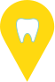
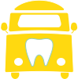
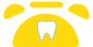

Vytvořili jsme dlouhodobý vztah založený na důvěře s pacienty. V naší ordinaci Vám poskytneme osobní přistup. S našimi odbornými znalostmi a za pomocí moderních technologií vám pomůžeme dosáhnout zdravého stavu vašich zubů a sebejistého úsměvu. Péče o Vaše zdraví je hlavním cílem naší ordinace.
Ordinaci provozuji od roku 2009, v předchozí době od roku 1999 jsem působila jako zaměstnanec u několika pražských praktických stomatologů a získala tak zkušenosti od dětské stomatologie po komplexní praktickou péči zubního lékaře. V současnosti ve své ordinaci nabízím komplexní péči o dětské pacienty, o jejich rodiče a prarodiče. Koncept rodinného praktického zubního lékaře je mi velmi blízký a snažím se o jeho realizaci. Dělám vše proto, abych ve své ordinaci nabízela vždy tu nejlepší péči. Svoji odbornost si pravidelně doplňuji a jsem držitelkou Odborného osvědčení ČSK – Praktické zubní lékařství.
Provádíme diagnostickou a léčebnou péči, dentální hygienu, záchovnou stomatologie, ošetření kořenových kanálků, protetické ošetření, pomoc při akutní bolestí.
Vstupní vyšetření / preventivní prohlídka hrazeno ZP.
Naší ordinaci najdete na níže uvedené adrese Polikliniky Barrandov ve 3. patře, napravo od výtahu.
| Krškova 807/21, 152 00 Praha 5 - Barrandov |
| Doprava |
Tramvaje: 32 |
Autobusy: x12, 170 |
| 251-81-31-34 |
| info@32zubu.cz |
Rady Vás přijmeme v naši ordinační hodiny, připadne změny uvedený v provozních aktualitách. Akutní případy vyřizujeme pro registrované pacienti cca 1 hodinu ze začátku ordinační doby.
Ordinační doba |
|
|---|---|
| Pondělí | 8:00 - 15:00 |
| Úterý | 9:00 - 18:00 |
| Středa | 8:00 - 14:00 |
| Čtvrtek | 9:00 - 18:00 |
| Pátek | 8:00 - 14:00 |
S ohledem na současnou epidemiologickou situaci vás žádáme, abyste nás i v akutních případech nejprve telefonicky kontaktovali. Domluvíme si termín ošetření. Zamezíme tím kumulaci pacientů v čekárně. Děkujeme za pochopení.
Naše registrované pacienty ošetřujeme pro akutní bolesti každý den ráno cca 1 hodinu ze začátku ordinační doby. Naléhavé případy je nutné řešit v rámci pohotovostních služeb poskytovaných velkými pražskými nemocnicemi.
Pro jakékoliv neakutní ošetření u nás registrovaných pacientů je nutné si předem sjednat v ordinaci termín ošetření. Věnujeme maximální péči tomu, abychom termín dodrželi. Prosíme Vás o totéž.
Součástí naší péče je plán léčebného postupu, pokud si to diagnostikované onemocnění vyžaduje. V několika návštěvách postupně odstraníme problémy nebo zhotovíme náhrady. Vyžádejte si plán léčby.
Nedílnou součástí naší péče o Vás jsou i preventivní prohlídky na, než Vás pravidelně zveme. Věnujte péči prevenci, je to pro Vás a Vaše zuby výhodné. Neodkládejte prevenci na později.